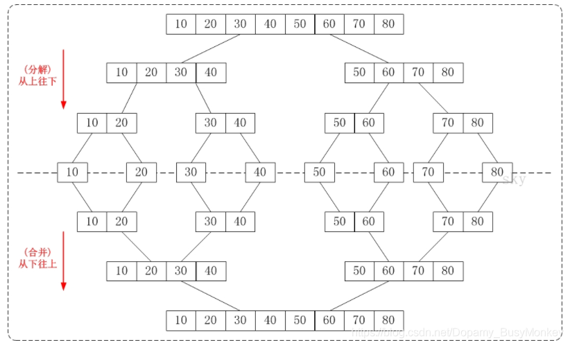
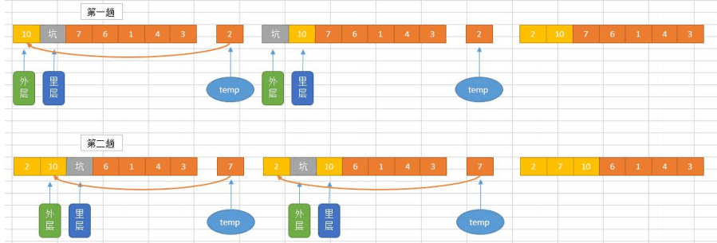

2020-08-15
23

算法--知识点整理
算法
一、算法基本概念
算法 是指解题方案的准确而完整的描述，是一系列解决问题的清晰指令，算法代表着用系统的方法描述解决问题的策略机制。也就是说，能够对一定规范的输入，在有限时间内获得所要求的输出。如果一个算法有缺陷，或不适合于某个问题，执行这个算法将不会解决这个问题。不同的算法可能用不同的时间、空间或效率来完成同样的任务。一个算法的优劣可以用空间复杂度与时间复杂度来衡量。
1.算法的特征
1）输入性： 有零个或多个外部量作为算法的输入
2）输出性： 算法至少有一个量作为输出
3）确定性： 算法中每条指令清晰，无歧义
4）有穷性： 算法中每条指令的执行次数有限，执行每条指令时间也有限
5）可行性： 算法原则上能够精确的运行，而且人们用纸和笔做有限次运算后即可 完成
2.算法效率
时间复杂度
一般来说，一个算法执行所消耗的时间从理论上是算不出来的，只有通过上机运行才能 测试出来。当然，我们也没必要知道一个算法它具体执行的时间是多少，而我们又知道，一 个算法花费的时间与算法中语句的执行次数是成正比的。哪个算法语句执行的次数多，它花费的时间就多。
def test(n):
count = 0;
for i in range(count,n):
for j in range(count,n):
count+=1
for k in range(0,2*n):
count+=1
icount=10
while icount>0:
count+=1
icount-=1时间复杂度的几条基本计算规则
- 基本操作，即只有常数项，认为其时间复杂度为 O(1)
- 顺序结构，时间复杂度按加法进行计算
- 循环结构，时间复杂度按乘法进行计算
- 分支结构，时间复杂度取最大值
- 判断一个算法的效率时，往往只需要关注操作数量的最高次项，其它次要项和 常数项可以忽略
- 在没有特殊说明时，我们所分析的算法的时间复杂度都是指最坏时间复杂度
空间复杂度
一个程序的空间复杂度是指运行完一个程序所需内存的大小。利用程序的空间复杂度， 可以对程序的运行所需要的内存多少有个预先估计。一个程序执行时除了需要存储空间和存 储本身所使用的指令、常数、变量和输入数据外，还需要一些对数据进行操作的工作单元和 存储一些为现实计算所需信息的辅助空间。
程序执行时所需存储空间包括以下两部分。
- 固定部分。这部分空间的大小与输入/输出的数据的个数多少、数值无关。主要包 括指令空间（即代码空间）、数据空间（常量、简单变量）等所占的空间。这部分属于静态 空间。
- 可变空间，这部分空间的主要包括动态分配的空间，以及递归栈所需的空间等。 这部分的空间大小与算法有关。
二、排序算法
排序算法 是一种能将一串数据依照特定顺序进行排列的一 种算法。
稳定性：稳定排序算法会让原本有相等键值的纪录维持相对次序。也就是如果一个排序 算法是稳定的，当有两个相等键值的纪录 R 和 S，且在原本的列表中 R 出现在 S 之前，在 排序过的列表中 R 也将会是在 S 之前。
1.冒泡排序
冒泡排序（英语：Bubble Sort）是一种简单的排序算法。它重复地遍历要排序的数列， 一次比较两个元素，如果他们的顺序错误就把他们交换过来。遍历数列的工作是重复地进行 直到没有再需要交换，也就是说该数列已经排序完成。这个算法的名字由来是因为越小的元 素会经由交换慢慢“浮”到数列的顶端。
冒泡排序算法的运作如下：
- 比较相邻的元素。如果第一个比第二个大（升序），就交换他们两个。
- 对每一对相邻元素作同样的工作，从开始第一对到结尾的最后一对。这步做完后，最后 的元素会是最大的数。
- 针对所有的元素重复以上的步骤，除了最后一个。
- 持续每次对越来越少的元素重复上面的步骤，直到没有任何一对数字需要比较。
def bubble_sort(alist):
for j in range(len(alist) - 1, 0, -1): # j 表示每次遍历需要比较的次数，是逐渐减小的
for i in range(j):
if alist[i] > alist[i+1]:
alist[i], alist[i+1] = alist[i+1], alist[i]
li = [54,26,93,17,77,31,44,55,20]
bubble_sort(li)
print(li)2.选择排序
选择排序（Selection sort）是一种简单直观的排序算法。它的工作原理是通过构 建有序序列，对于未排序数据，在已排序序列中从后向前扫描，找到相应位置并插入。插入 排序在实现上，在从后向前扫描过程中，需要反复把已排序元素逐步向后挪位，为最新元素 提供插入空间
选择排序算法：
def selection_sort(alist): n = len(alist) # 需要进行 n-1 次选择操作 for i in range(n-1): # 记录最小位置 min_index = i # 从 i+1 位置到末尾选择出最小数据 for j in range(i+1, n): if alist[j] < alist[min_index]: min_index = j
# 如果选择出的数据不在正确位置，进行交换 if min_index != i: alist[i], alist[min_index] = alist[min_index], alist[i] alist = [54,226,93,17,77,31,44,55,20] selection_sort(alist) print(alist)3.插入排序
插入排序（Selection sort）是一种简单直观的排序算法。它的工作原理如下。首先在未 排序序列中找到最小（大）元素，存放到排序序列的起始位置，然后，再从剩余未排序元素 中继续寻找最小（大）元素，然后放到已排序序列的末尾。以此类推，直到所有元素均排序 完毕。
插入排序算法：
def insert_sort(alist):
n=len(alist)
for j in range(1,n):
i=j
while i>0:
if alist[i]>alist[i]:
alist[i-1],alist[i]=alist[i],alist[i-1]
else:
break
i-=1
if __name__ == '__main__':
alist=[54, 226, 93, 17, 77, 31, 44, 55, 20]
print('原数组：')
print(alist) print('排序后：')
insert_sort(alist) print(alist)

4.快速排序
快速排序（Selection sort）又称为交换排序，通过一趟排序将要排序的数据分割为 独立的两部分。假设要排序的列表是 A[0]……A[N-1]， 首先任意选取一个数据（通常选用 列表的第一个数）作为基准数据，然后将所有比它小的数都放到它左边，所有比它大的数都 放到它右边， 这个过程称为一趟快速排序。值得注意的是，快速排序不是一种稳定的排序算 法，也就是说，多个相同的值的相对位置也许会在算法结束时产生变动。
步骤为：
- 设置两个变量 low、high，排序开始的时候：low=0，high=N-1；
- 以第一个列表元素作为基准数据，赋值给 mid，即 mid=A[0]；
- 从 high 开始向前搜索，即由后开始向前搜索(high--)，找到第一个小于 mid 的值 A[high]，将 A[hight]和 A[low]的值交换；
- 从 low 开始向后搜索，即由前开始向后搜索(low++)，找到第一个大于 mid 的 A[low]，将 A[low]和 A[high]的值交换；
- 重复第 3、4 步，直到 low=high；
快速排序算法：
def quick_sort(alist, start, end):
"""快速排序"""
# 递归的退出条件
if start >= end:
return
# 设定起始元素为要寻找位置的基准元素
mid = alist[start]
# low 为序列左边的由左向右移动的游标
low = start
# high 为序列右边的由右向左移动的游标
high = end while low < high:
# 如果 low 与 high 未重合，high 指向的元素不比基准元素小，则 high 向左移动
while low < high and alist[high] >= mid:
high -= 1
# 将 high 指向的元素放到 low 的位置上
alist[low] = alist[high]
# 如果 low 与 high 未重合，low 指向的元素比基准元素小，则 low 向右移动
while low < high and alist[low] < mid: low += 1
# 将 low 指向的元素放到 high 的位置上
alist[high] = alist[low]
# 退出循环后，low 与 high 重合，此时所指位置为基准元素的正确位置 # 将基准元素放到该位置
alist[low] = mid # 对基准元素左边的子序列进行快速排序
quick_sort(alist, start, low-1) # 对基准元素右边的子序列进行快速排序
quick_sort(alist, low+1, end)
alist = [54,26,93,17,77,31,44,55,20]
quick_sort(alist,0,len(alist)-1) print(alist)5.归并排序
归并排序（Selection sort）是采用分治法的一个非常典型的应用。归并排序的思想就是先递归分解数组， 再合并数组。 将数组分解最小之 后，然后合并两个有序数组，基本思路是比较两个数组的最前面的数， 谁小就先取谁，取了后相应的指针就往后移一位。然后再比较，直至一 个数组为空，最后把 另一个数组的剩余部分复制过来即可。
归并排序算法：
def merge_sort(alist):
if len(alist) <= 1:
return alist
# 二分分解
num = len(alist)//2
left = merge_sort(alist[:num])
right = merge_sort(alist[num:])
# 合并 return merge(left,right)
def merge(left, right):
'''合并操作，将两个有序数组 left[]和 right[]合并成一个大的有序数组'''
#left 与 right 的下标指针
l, r = 0, 0
result = []
while len(left)>l and len>(right)>r:
if left[l] < right[r]:
result.append(left[l]) l += 1
else:
result.append(right[r])
r += 1
result += left[l:]
result += right[r:]
return result
alist = [54,26,93,17,77,31,44,55]
sorted_alist = merge_sort(alist)
print(sorted_alist)三、查找算法
1.顺序查找方法
顺序查找方法（Selection sort）最基本的查找技术，过程：从表中的第一个（或最后一个）记录开始，逐个进行记录的 关键字和给定值比较， 若某个记录的关键字和给定值相等，则查找成功，找到所查的记录； 如果直到最后一个（或第一个）记录，其关键字和给定值比较都不等时， 则表示没有查到记录，查找不成功。
顺序查找算法：
#从 a 列表中查找值 v,如果找到则返回第一次出现的下标，否则返回-1
def sequenceSearch(a,v):
for i in range(len(a)):
if a[i] == v:
return i
return -1
if __name__ == '__main__':
a=[11,22,33,44,55,11]
v=22
index=sequenceSearch(a,v)
print('查找到的索引为：',index)2.二分查找方法
二分查找又称折半查找，优点是比较次数少，查找速度快，平均性能好；其缺点是要求 待查表为有序表，且插入删除困难。因此，折半查找方 法适用于不经常变动而查找频繁的有 序列表。首先，假设表中元素是按升序排列，将表中间位置记录的关键字与查找关键字比较， 如果两者 相等，则查找成功；否则利用中间位置记录将表分成前、后 fp 两个子表，如果中 间位置记录的关键字大于查找关键字，则进一步查找前一 子表，否则进一步查找后一子表。 重复以上过程，直到找到满足条件的记录，使查找成功，或直到子表不存在为止，此时查找 不成功。
二分法查找法（非递归实现）
def binary_search(alist, item):
first = 0
last = len(alist) - 1
while first <= last:
midpoint = (first + last) // 2
if alist[midpoint] == item:
return True
elif item < alist[midpoint]:
last = midpoint - 1
else:
first = midpoint + 1
return False
testlist = [0, 1, 2, 8, 13, 17, 19, 32, 42 ]
print(binary_search(testlist, 12))
print(binary_search(testlist, 13))二分法查找法（递归实现）
def binary_search(alist, item):
if len(alist) == 0:
return False
else:
midpoint = len(alist)//2
if alist[midpoint]==item:
return True
else:
if alist[midpoint]>item:
return binary_search(alist[:midpoint],item)
else:
return binary_search(alist[midpoint+1:],item)
testlist = [0, 1, 2, 8, 13, 17, 19, 32, 42,]
print(binary_search(testlist, 3))
print(binary_search(testlist, 13))Comments

回复

回复

回复

回复